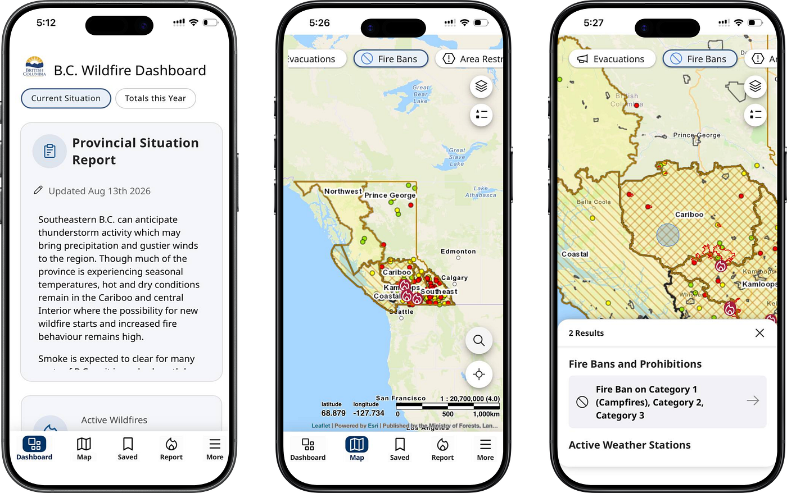

A decision feature for the BC Wildfire Service app that answers the one
question campers actually ask: "Is it safe and legal to light a fire
here, right now?" From five map layers and jargon to a single
plain-worded verdict.
$21,850
in campfire-ban fines issued in one BC weekend, Aug 2026
~40%
of BC wildfires are human-caused
5+ → 1
steps to an answer, current app vs. this feature
<30s
target time-to-verdict for a first-time user
01
The problem
Every day, BC Wildfire Service publishes the exact data needed to answer
whether tonight's campfire is safe and legal: fire weather indices, danger
ratings, and ban boundaries, computed daily. None of it reaches an ordinary
person at the moment they decide to light a fire.
Existing tools are built around active fires. Watch Duty and Cal
Fire can tell you where a fire is burning, but not whether tonight's
campfire is legal. The BCWS app technically holds the answer, but only
after digging through multiple map layers and decoding confusing category
names.
During BC's August 2026 state of emergency, 19
campfire-ban tickets, $21,850 in fines, were issued in a single
weekend, some to people who say they checked and still got it wrong.
Roughly 40% of BC's wildfires are human-caused, and behind most of them is
an ordinary decision made without information. The data exists. The
consequences are real. What's missing is one answer at the moment of decision.
02
Auditing the current app
To find where the experience breaks, I walked through the current BCWS
mobile app with a single task: "Can I light a campfire here
tonight?" The app offers five tabs, Dashboard, Map, Saved, Report,
More, and reaching an answer takes four-plus steps: open the map, find your
location, pan to the exact site, toggle the right layer, and tap the area.
Even then, the app never gives a definite decision. It drowns a normal user
in uninterpretable information.

Prohibition pages from the current BCWS app: the answer is in there, but no verdict ever surfaces.
03
Who I designed for
Built from public-forum evidence, not invented in a vacuum:
Apurba, the Meticulous Planner
Apurba has booked a campground for Saturday. On Tuesday night, deciding
whether to pack firewood, he reads the official prohibition pages and
still can't project the ban map onto his campsite. This was the most
common failure in my research: he needs a verdict
for an exact place and date, plus a heads-up if it changes before
the trip.
04
Three pain points, from research
Jurisdiction confusion
Campers checking the provincial map still can't tell whether a park or municipal rule overrides it at their exact site.
Ambiguous danger ratings
Users don't know if "Extreme" is a legal restriction or just a warning. The rating arrives without the rule.
No appliance-level clarity
Bans are published by region and broad category, so nobody can tell whether a wood campfire, propane fire pit, or charcoal grill is actually allowed.
05
Competitive landscape
BCWS effectively competes with Watch Duty and Cal Fire for this moment, even
though neither was built for it. Across all three, none answers the one
question the camper actually has.
Platform
Can it answer "campfire tonight?"
BCWS app
Yes, but in 5+ steps across two ambiguous layers, with once-a-day data and no verdict.
Watch Duty
No. Tracks active fires; carries no ban or preventive data.
Cal Fire
No. Incident-specific; no decision tool.
06
Campfire Verdict: one surface, one answer
The goal: a first-time user gets a definitive answer within 30 seconds of
opening the app. Everything the current app scatters lives on one surface,
and each element answers one of the researched pain points directly:
A plain-worded verdict. The camper's question is answered in a sentence, not a map layer, resolving the jurisdiction confusion by doing the overlay math for them.
Danger as a spectrum, shown with the rule. The rating is presented on a visual scale alongside what it legally means, so "Extreme" is no longer ambiguous.
An appliance-level list. Built from BCWS's own published rule book: wood campfire, propane fire pit, charcoal grill, each explicitly allowed or not at this site, today.
The verdict: plain words, danger spectrum with the rule, appliance-level list.The evidence: why it's banned, layer by layer, province, park, municipal.
Reflection
No new data, just a decision
The feature needed no new data.
Every layer already existed as open data; the work was turning an unreadable map
into a decision-facing answer. That's the part of product design I find most
interesting: the gap is rarely in the data, it's between the data and the moment
of decision.
What's not designed yet: a
forecast. Apurba checks on Tuesday for a Saturday trip, will today's verdict
hold until the day of the event? Closing that loop, verdict plus change-alert,
is the natural next iteration.